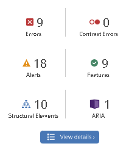

UU Analyse med Webaim
Hovedside
Her er en oppsumering av resultatene som hovedsiden fikk etter en UU analyse med Webaim.
Her er detaljene av resultatene over. Tomme linker og knapper er forventet resultat. Hovedsiden mangler en form label på søkefeltet. Webaim sier også at nettsiden mangler "first level heading" og har en unødvendig link. Linken i feilmeldingen er logoen i footeren. Den er klasifisert som unødvendig fordi den leder til hovedsiden, selv om det er siden du allerede er på.
Produktside

Dette er resultatene fra UU analysen av produktsiden. Denne siden har flere elementer enn hovedsiden, og den har fått flere feilmeldinger av analysen.
Resultatene viser at produktsiden har akkurat samme 9 feilmeldinger som hovedsiden. Manglende form label, og linker som ikke er koblet til en annen nettside. Advarslene, derimot, er det flere av. Analysen er ikke glad i at alle bildene har titler (der jeg har lagt link til kilde), og klager på at tekstenm som er brukt i alle "knappene" på siden ikke er heading elementer. Ellers så viser de grønne og blå (ikke avbildet) resultatene bare oppbyggningen og strukturen til nettsiden.
handlekurv

sist, men ikke minst, kommer vi til handlekurv-siden. Her har siden også 9 røde feilmeldinger, som de to andre sidene. Siden har også 16 varslermeldinger.

Nettsiden har igjen samme 9 feilmeldinger som de to andre sidene. Mangel av form label på søkefeltet. Forstørrelsesglasset-knappen funker ikke. 7 linker som ikke leder noen steder. Advarslene klager igjen på tekst som ser ut som at det skal være en heading, men ikke er heading element. Det er flere linker på siden som leder til samme URL. "Hent i butikk" eller "levering" knappene ligger ikke i en "fieldset" og dette får siden en varsel på.
Her er feilmeldingene som alle sidene hadde til felles. Det er elementer i headeren på siden.